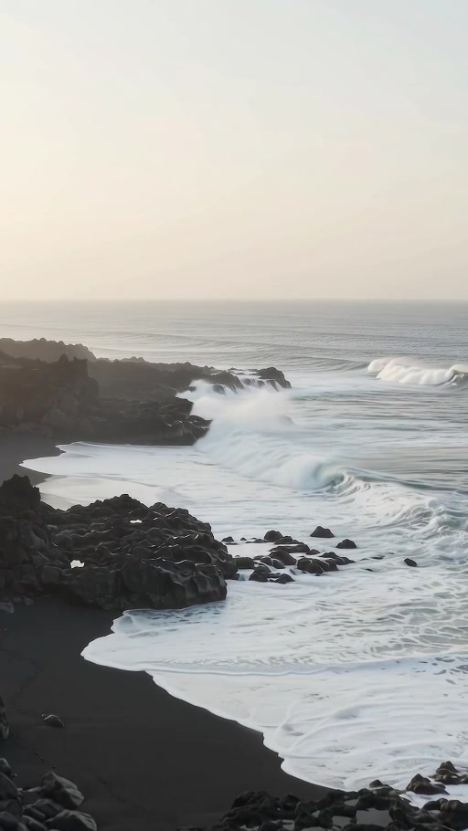
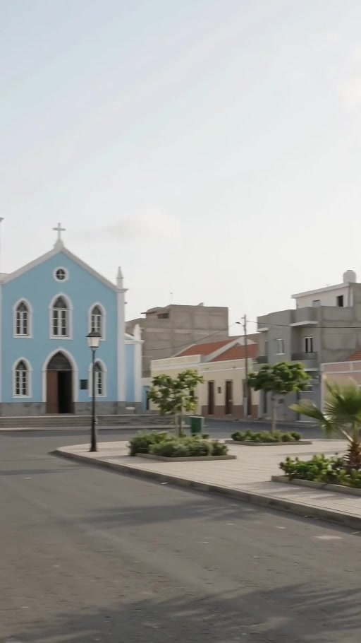
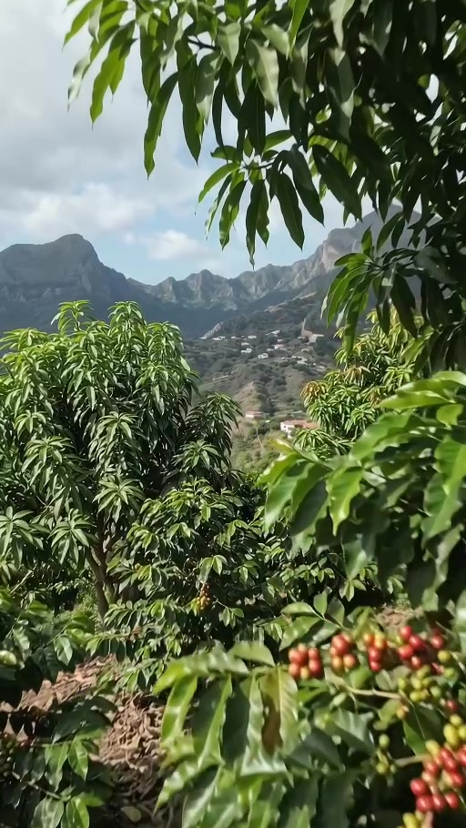
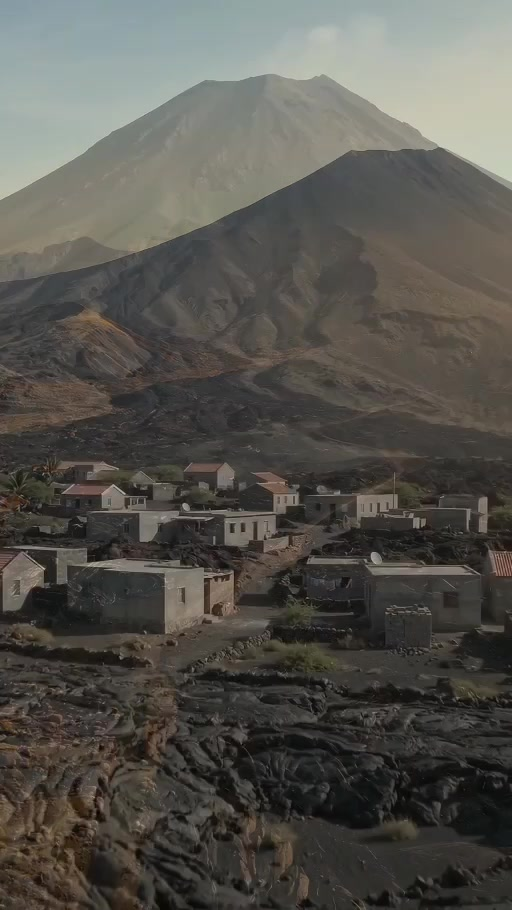
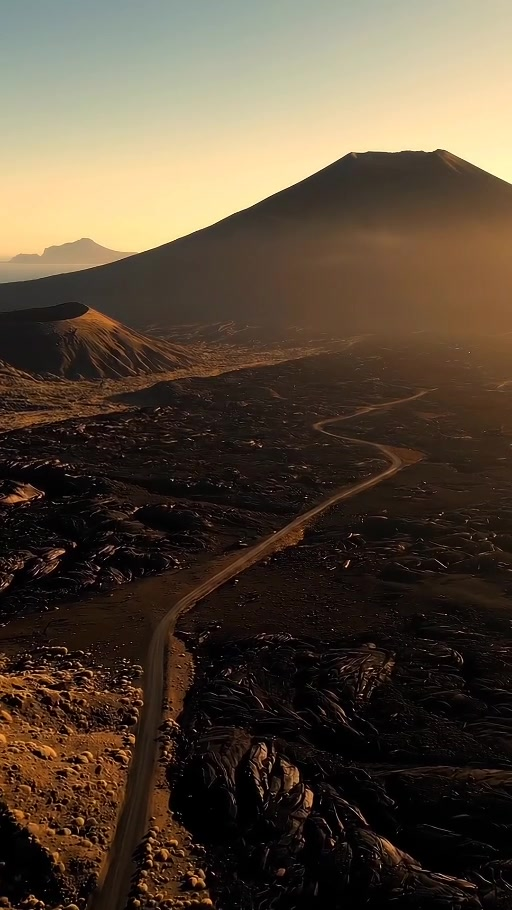
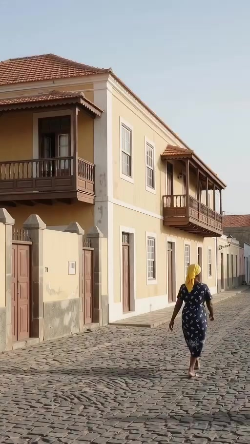
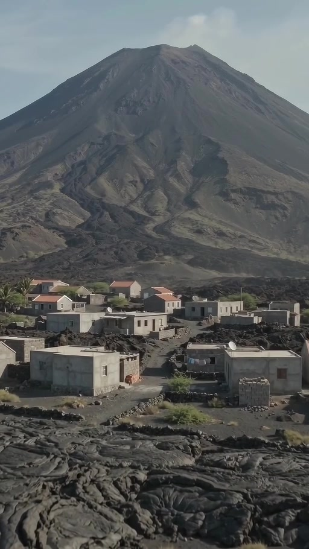
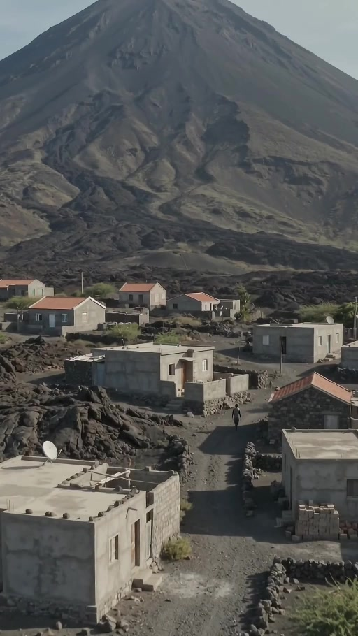
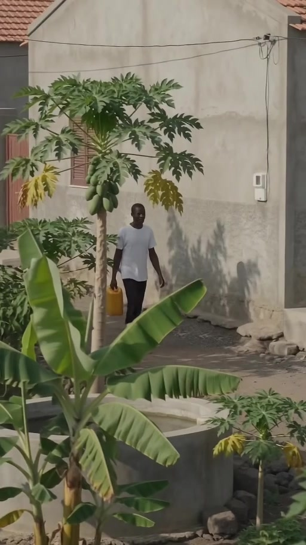

Strategic focus
Present Fogo through the relationship between its volcanic terrain and the life around it: cultivation, architecture, communities and the coast.
Independent Creative Case Study · Cape Verde
A reference-informed cinematic interpretation of Fogo Island, Cape Verde.
Independent work by Timas Motion. A self-initiated project developed with visual reference, human creative direction and AI-assisted production. Not a commissioned tourism campaign.
The Film
A 39-second film built around local reference, contrast and identity.
39 seconds · Vertical 9:16 · 1080 × 1920 delivery
The film ends on everyday village life rather than on the volcano. The line Shaped by Fire. Defined by Life. frames the communication around the film; it does not appear on screen.
01 — The Challenge
How can an island shaped by a volcano be presented without reducing it to the volcano itself?
Fogo combines black volcanic landscapes with agriculture, historic architecture, mountain communities and everyday life. The project set out to translate that range into a cinematic visual narrative while keeping the island recognisable and grounded in local reference.
The aim was to show what is already there, not to reinvent the island.


Present Fogo through the relationship between its volcanic terrain and the life around it: cultivation, architecture, communities and the coast.
Reference research, creative direction, a set of AI-assisted visual studies and a 39-second vertical film.
Public municipal and island sources for context. Generated scenes are labelled as interpretation, and no commercial results are claimed.
02 — The Insight
Fogo’s identity comes from the relationship between land, communities, cultivation, architecture and the Atlantic. The material for the story already existed and did not need to be invented.
This changed the role of AI in the project. Instead of producing a more dramatic island, each visual decision had to stay connected to recognisable local reference. AI could support light, composition and atmosphere; local reference remained the filter.

03 — The Concept
The volcano formed the island’s landscape. The concept places equal weight on the people, crops and towns that live within it.
04 — Creative Direction
Guiding principle: elevated in presentation, believable in place.

AI supported the cinematic interpretation. Local reference guided the creative decisions.
05 — Reference & Creative Decisions
The goal was not only to find attractive references but to keep Fogo recognisable. Each study was checked against one question: could this realistically belong to Fogo?
The municipality of Mosteiros describes coffee cultivation on volcanic soils at elevations of 350–1,300 metres. This gives the coffee theme a specific geographic context. Read the municipal source ↗
A lush, generic tropical landscape could obscure the relationship between cultivation and volcanic terrain.
The coffee study is read through three elements: cultivation in the foreground, mountain relief and settlement in the distance. These are creative criteria, not a geographic survey.
The image is an AI-assisted visual study. It does not establish the exact location of a plantation or document a real viewpoint.
These public references were added during the case-study review. They provide context for the themes below; they do not certify the generated scenes or document the original production process.
Coffee cultivation, volcanic soils and the upland growing areas of Mosteiros. Context for the coffee visual study.
The coastal setting and historic sobrados of São Filipe. Context for the architectural theme, without claiming an exact reconstruction.
06 — The Production

Each generated scene was evaluated for believability before visual impact. Scenes that looked striking but did not read as Fogo were refined or left out.
07 — The Edit
Individual scenes were connected through rhythm, sequence, contrast and sound. The studies below show the visual range explored across the project; the film presents the selected sequence.




The sequence moves from the volcanic landscape to the life that exists around it.
08 — The Outcome
This independent study brings together reference research, a creative direction, a set of visual studies and a 39-second film. It demonstrates the studio’s approach to place, atmosphere and editorial rhythm.
Produced
A 39-second vertical portrait of Fogo, delivered at 1080 × 1920.
Produced
AI-assisted studies of the coast, São Filipe, coffee cultivation, terrain and community life.
Documented
The public sources used, what they informed and the limits of the interpretation.
Commercial possibilities
A creative approach for independent stays, local experiences and destination brands.
Travellers looking for culture, landscape and a more personal connection to a destination.
Introduce the character of a place and invite viewers to explore a stay or experience through a clear next step.
A social introduction, a film for a hospitality website, or a short destination story connected to an enquiry page.
These are proposed applications.
Discuss a film for your brand